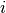
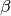
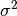

Linear Mixed Effects Models¶
Linear Mixed Effects models are used for regression analyses involving dependent data. Such data arise when working with longitudinal and other study designs in which multiple observations are made on each subject. Two specific mixed effects models are random intercepts models, where all responses in a single group are additively shifted by a value that is specific to the group, and random slopes models, where the values follow a mean trajectory that is linear in observed covariates, with both the slopes and intercept being specific to the group. The Statsmodels MixedLM implementation allows arbitrary random effects design matrices to be specified for the groups, so these and other types of random effects models can all be fit.
The Statsmodels LME framework currently supports post-estimation inference via Wald tests and confidence intervals on the coefficients, profile likelihood analysis, likelihood ratio testing, and AIC. Some limitations of the current implementation are that it does not support structure more complex on the residual errors (they are always homoscedastic), and it does not support crossed random effects. We hope to implement these features for the next release.
Examples¶
In [1]: import statsmodels.api as sm
In [2]: import statsmodels.formula.api as smf
In [3]: data = sm.datasets.get_rdataset("dietox", "geepack").data
In [4]: md = smf.mixedlm("Weight ~ Time", data, groups=data["Pig"])
In [5]: mdf = md.fit()
In [6]: print(mdf.summary())
Mixed Linear Model Regression Results
========================================================
Model: MixedLM Dependent Variable: Weight
No. Observations: 861 Method: REML
No. Groups: 72 Scale: 11.3669
Min. group size: 11 Likelihood: -2404.7753
Max. group size: 12 Converged: Yes
Mean group size: 12.0
--------------------------------------------------------
Coef. Std.Err. z P>|z| [0.025 0.975]
--------------------------------------------------------
Intercept 15.724 0.788 19.952 0.000 14.179 17.268
Time 6.943 0.033 207.939 0.000 6.877 7.008
groups RE 40.394 2.149
========================================================
Detailed examples can be found here
There some notebook examples on the Wiki: Wiki notebooks for MixedLM
Technical Documentation¶
The data are partitioned into disjoint groups. The probability model for group  is:
where
- is the number of observations in group
 is a dimensional response vector
is a dimensional response vector is a dimensional matrix of fixed effects
coefficients
is a dimensional matrix of fixed effects
coefficients-  is a -dimensional vector of fixed effects slopes
- is a dimensional matrix of random effects coefficients
- is a -dimensional random vector with mean 0
and covariance matrix
 ; note that each group
gets its own independent realization of gamma.
; note that each group
gets its own independent realization of gamma. - is a dimensional vector of i.i.d normal errors with mean 0 and variance ; the values are independent both within and between groups
and must be entirely observed. and are estimated using ML or REML estimation, and and are random so define the probability model.
The mean structure is ![E[Y|X,Z] = X*\beta](_images/math/0a7e3a023234e84717614f45e38808e185a72489.png) . If only the mean structure
is of interest, GEE is a good alternative to mixed models.
. If only the mean structure
is of interest, GEE is a good alternative to mixed models.
Notation:
- is the random effects covariance matrix (referred to above
as ) and is the (scalar) error variance. For a single
group, the marginal covariance matrix of endog given exog is , where is the design matrix for the random
effects in one group.
Notes¶
1. Three different parameterizations are used here in different
places. The regression slopes (usually called  ) are
identical in all three parameterizations, but the variance parameters
differ. The parameterizations are:
) are
identical in all three parameterizations, but the variance parameters
differ. The parameterizations are:
- The natural parameterization in which , as described above. This is the main parameterization visible to the user.
- The profile parameterization in which . This is the parameterization of the profile likelihood that is maximized to produce parameter estimates. (see Lindstrom and Bates for details). The natural is equal to the profile times scale.
- The square root parameterization in which we work with the Cholesky factor of instead of directly.
All three parameterizations can be packed by concatenating
together with the lower triangle of the dependence structure. Note
that when unpacking, it is important to either square or reflect the
dependence structure depending on which parameterization is being
used.
2. The situation where the random effects covariance matrix is singular is numerically challenging. Small changes in the covariance parameters may lead to large changes in the likelihood and derivatives.
3. The optimization strategy is to optionally perform a few EM steps, followed by optionally performing a few steepest descent steps, followed by conjugate gradient descent using one of the scipy gradient optimizers. The EM and steepest descent steps are used to get adequate starting values for the conjugate gradient optimization, which is much faster.
References¶
The primary reference for the implementation details is:
- MJ Lindstrom, DM Bates (1988). Newton Raphson and EM algorithms for linear mixed effects models for repeated measures data. Journal of the American Statistical Association. Volume 83, Issue 404, pages 1014-1022.
See also this more recent document:
All the likelihood, gradient, and Hessian calculations closely follow Lindstrom and Bates.
The following two documents are written more from the perspective of users:
Module Reference¶
The model class is:
MixedLM(endog, exog, groups[, exog_re, ...]) |
An object specifying a linear mixed effects model. |
The result classe are:
MixedLMResults(model, params, cov_params) |
Class to contain results of fitting a linear mixed effects model. |